Profil dasar tiap tokoh. Kolom “Catatanku” adalah tempat aku menulis penilaian pribadi.
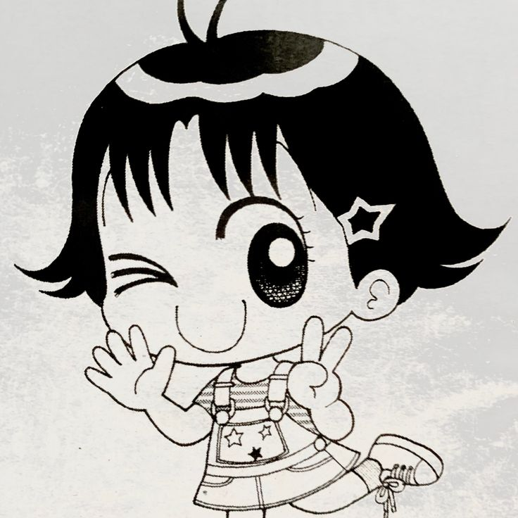
Miiko Yamada
Tokoh utama. Ceria, aktif, peduli pada teman, tetapi polos soal perasaan orang lain.
Catatanku: Aku sangat suka karakter miiko ini karena dia benar-benar karakter yang relate sekali dengan anak-anak seumurannya.
Menyenangkannya dapat, menyebalkannya juga dapat, lalu Miiko ini anak pertama, jadi aku merasa seperti kita memiliki persamaan. Jiwa dari seluruh cerita Hai, Miiko!.
Kadang bikin gemas karena ceroboh dan polos banget soal cinta, tapi semangat positif, kepeduliannya ke teman-teman, dan ketulusan hatinya selalu bikin aku betah ngikutin
perjalanannya dari kecil sampai remaja. Karakter yang hangat!
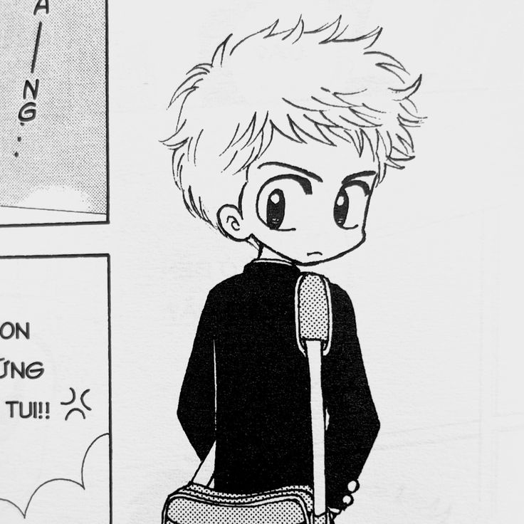
Tappei Eguchi
Tinggi dan atletis, agak kasar, tetapi peduli. Sering menggoda Miiko dan selalu hadir saat ia kesulitan.
Catatanku: Tipikal cowok tsundere kesayangan pembaca! Luarnya kelihatan suka banget usil dan ngecengin Miiko,
tapi di balik itu dia pelindung paling setia yang selalu ada pas Miiko butuh bantuan.
Dinamika hubungan mereka berdua selalu jadi daya tarik utama di tiap volume.
Tappei ini selalu peka kalau Miiko ada masalah, tapi dia ini gengsinya tingkat dewa!
Tapi di volume 36 ke atas Tappei mulai memberanikan diri WUAHHHHHHHH
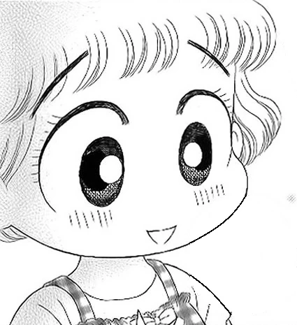
Mari Shimura
Sahabat Miiko. Keras kepala, blak-blakan, dan setia. Bercita-cita menjadi komikus.
Catatanku: Sahabat sejatinya Miiko! Keras kepala, ceplas-ceplos, tapi setianya juara.
Perjuangan dan impiannya buat jadi seorang mangaka juga terasa sangat relate,
bikin dia jadi salah satu karakter cewek yang paling keren di kelas.
Sifat lain Mari, dia ini manja sekali, tapi dia itu loyal banget sama temen-temennya.
Mari ini soal percintaan selalu gagal, tapi kali ini hmm mungkin bisa ya dengan Yoshida?
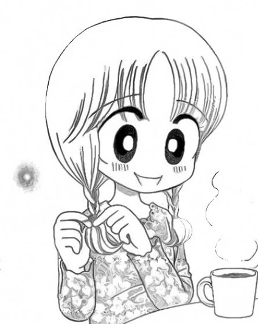
Yuuko Ogawa (Yukko)
Dewasa, baik, dan sabar. Sering menengahi Miiko dan Mari, pandai memasak dan membuat kerajinan.
Catatanku: Si malaikat penengah di kelompok Miiko dan Mari.
Lembut, dewasa, dan jago banget di urusan dapur maupun kerajinan tangan.
Kesabaran Yukko waktu menghadapi berbagai kekonyolan temannya benar-benar patut diacungi jempol.
Yukko juga Pintar, soal sekolah dia termasuk pintar loh, nilai raportnya banyak yang A+.
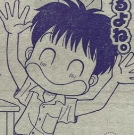
Kenta Sato
Lucu dan baik hati, kadang usil. Pacar Yukko dan bercita-cita membuka toko roti bersamanya.
Catatanku: Pacarnya Yukko yang kocak, usil, tapi baik hati.
Pasangan paling serasi di kelas yang impian masa depannya bikin terharu—mau buka toko roti bareng Yukko.
Tingkah konyolnya sering bikin suasana makin meriah!
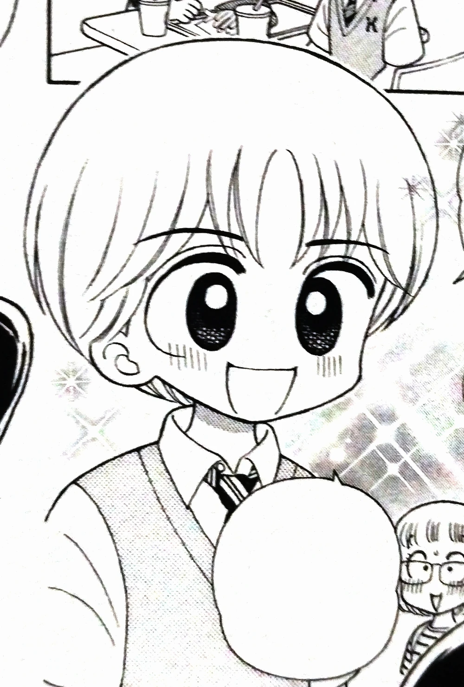
Ikuya Yoshida
Murid teladan yang tenang dan pintar. Menyukai Miiko dan menganggap Tappei sebagai saingan.
Catatanku: Murid teladan idaman sekolah! Tenang, pintar, dan sangat memerhatikan detail.
Sayangnya dalam hal percintaan, perjuangannya buat dapetin perhatian Miiko sering harus bersaing sengit dengan Tappei.
Yoshida ini udah terang-terangan ke Miiko dan beberapa kali sempat ingin menembak Miiko, tapi selalu gagal.
Entah karena hal lain atau Miikonya ga peka, semangat Yoshida. Padahal Yoshida ini banyak loh yang demen tapi.. dia sukanya Miiko.
Di volume 38 Yoshida mulai melihat Mari loh!
Tim Yoshida mana suaranya?
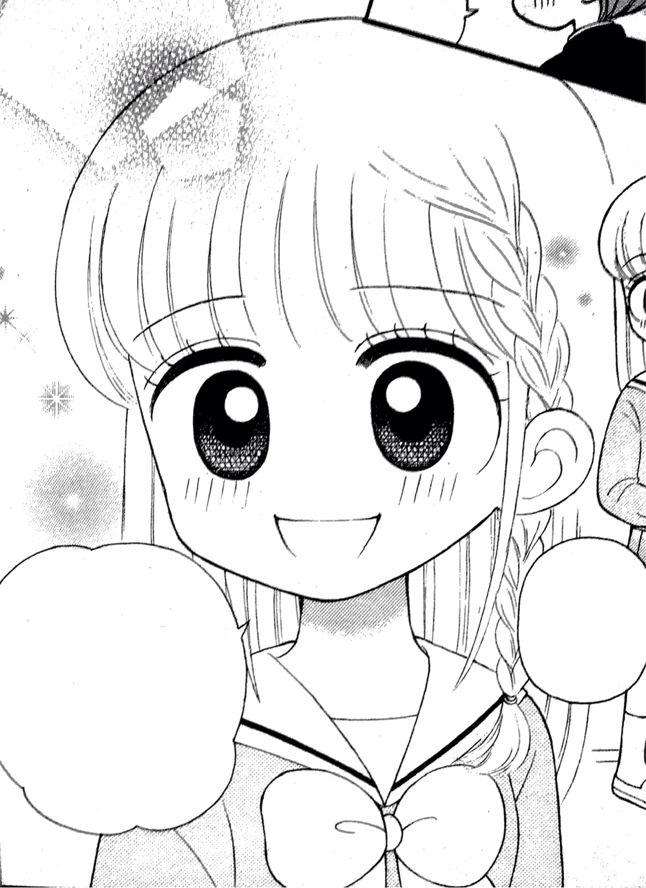
Miho Tanimura
Gadis paling cantik di kelas. Menyukai Tappei.
Catatanku: Si cantik idola kelas yang punya sisi rapuh dan gigih dalam memperjuangkan perasaannya ke Tappei.
Kehadirannya bikin konflik cerita cinta segitiga / segi empat di kelas jadi jauh lebih dinamis dan menarik disimak.
Kalau dilihat secara detail, anak-anak perempuan seperti Miho ini banyak juga loh di kehidupan nyata.
Miho ini banyak yang disukai, dia juga banyak mantannya, hal seperti ini termasuk normal karena kehidupan orang-orang kan berbeda-beda.
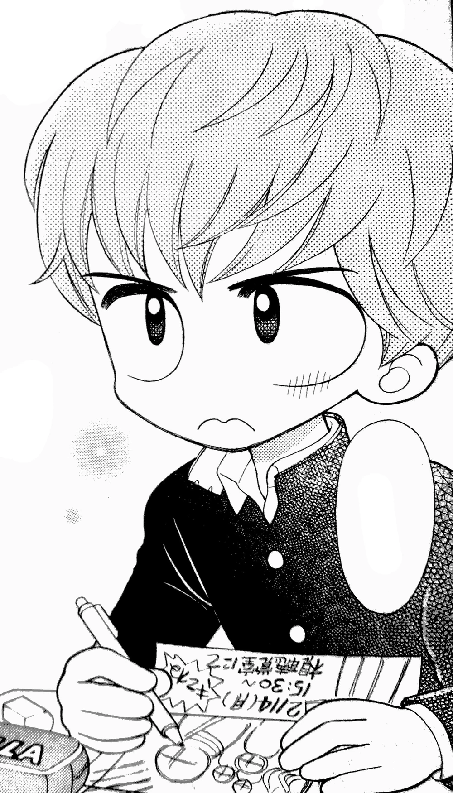
Yoshiki Nomura
Anak pendiam dan nyentrik, tetapi punya sisi yang masuk akal.
Catatanku: Karakter paling unik dan misterius dengan dunianya sendiri.
Pendiam dan nyentrik, tapi di balik itu dia sering banget ngeluarin pemikiran atau sudut pandang yang ternyata masuk akal banget.
Yoshiki ini murid pindahan dan dia suka banget loh sama Miho. Dia sudah confess ke Miho, tapi Miho nya saat itu.. suka Tappei.
Tapi di volume terbaru ini, Yoshiki yang tadinya pendek udah mulai tambah tinggi. Lalu, Miho pun sepertinya mulai melihat Yoshiki.
Akankah Yoshiki bersama dengan cinta pertamanya??
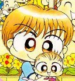
Mamoru Yamada
Adik Miiko yang rajin dan sering membantu kakaknya mengerjakan PR.
Catatanku: Adik cowok yang jauh lebih mandiri dan rasional dibanding kakaknya.
Sering banget jadi tempat Miiko minta tolong pas panik ngerjain PR.
Hubungan kakak-adik mereka berdua terasa sangat realistis dan gemesin.
Mamoru ini juga lebih dewasa dari Miiko, banyak yang salah mengira kalau Mamoru adalah kakaknya Miiko, karena saking ke'kakak'an.
Mamoru juga punya cewek loh, ceweknya cantik pula.
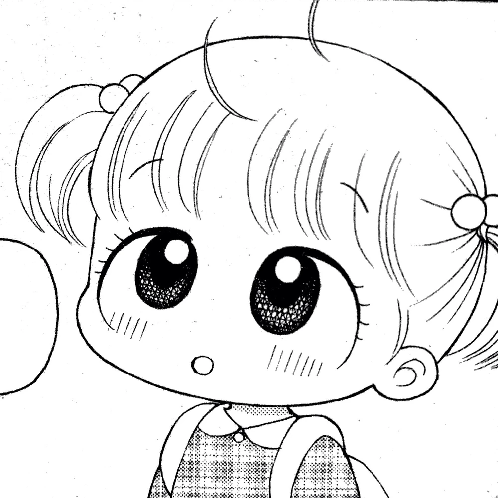
Momo Yamada
Adik bungsu Miiko dan Mamoru.
Catatanku: Adik bungsu yang menggemaskan dan jadi pusat kebahagiaan di rumah keluarga Yamada.
Tingkah polosnya sering bikin seisi rumah (terutama Miiko) kerepotan sekaligus tersenyum gemas.
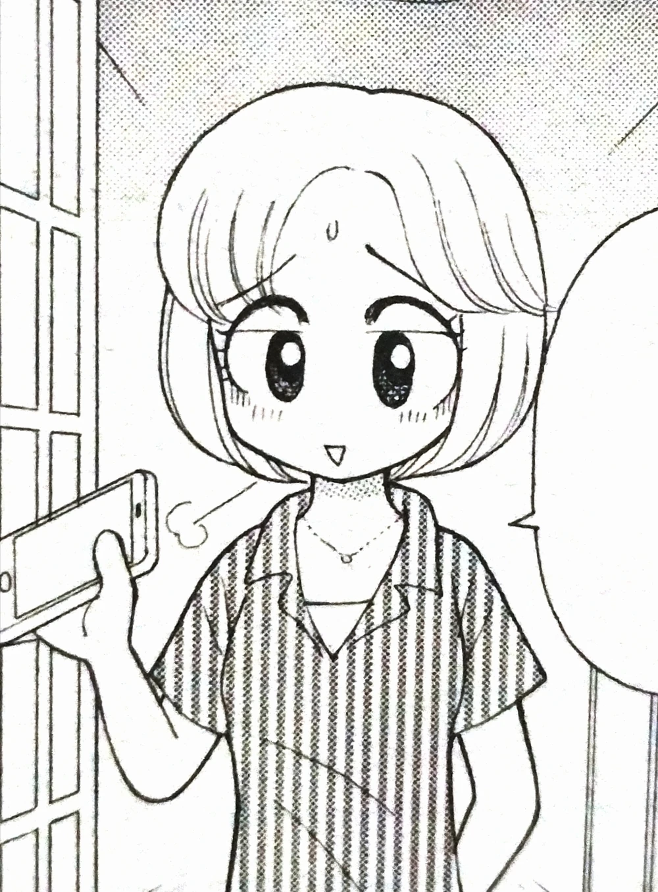
Rie Yamada
Ibu Miiko, seorang editor majalah.
Catatanku: Ibu super sibuk yang juga seorang editor majalah.
Tegas, penyayang, tapi terkadang bisa panik juga kalau urusan rumah tangga atau deadline kerjaan lagi numpuk.
Sosok ibu idaman yang sangat hangat.
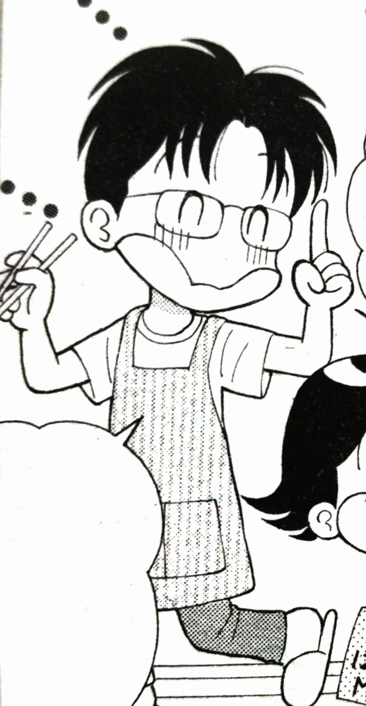
Kosuke Yamada
Ayah Miiko, seorang wartawan koran.
Catatanku: Ayah yang santai, humoris, dan bekerja sebagai wartawan koran.
Sering jadi penengah yang adem kalau suasana di rumah lagi rame atau pas Miiko lagi ngambek.
🏫
Akio Onishi
Wali kelas Miiko dari kelas 4 sampai kelas 6.
Catatanku: Wali kelas legendaris yang sabar banget ngadepin kelakuan murid-murid kelas 4 sampai 6 yang super aktif.
Guru berdedikasi tinggi yang selalu ngertiin permasalahan anak didiknya.